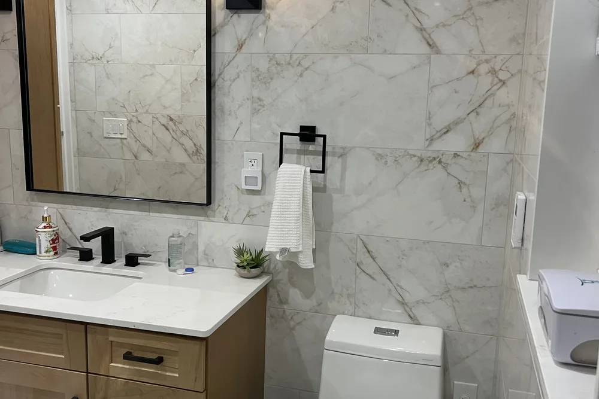
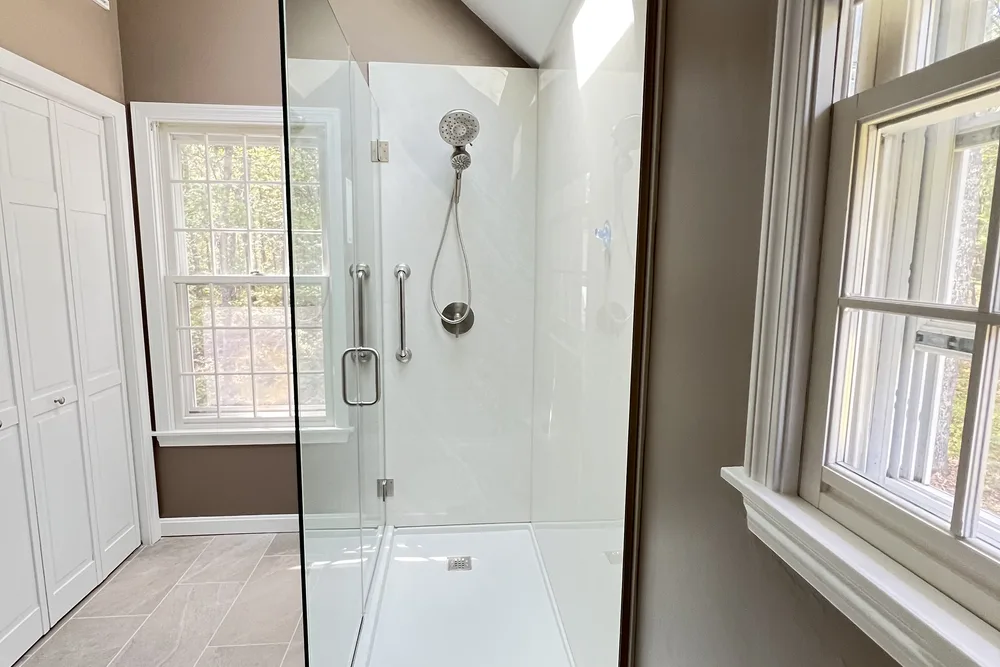
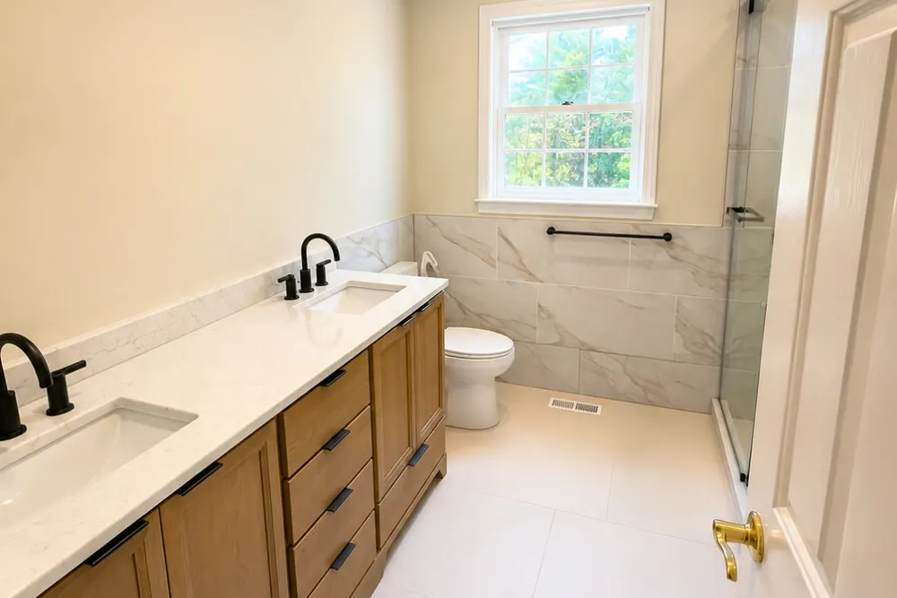
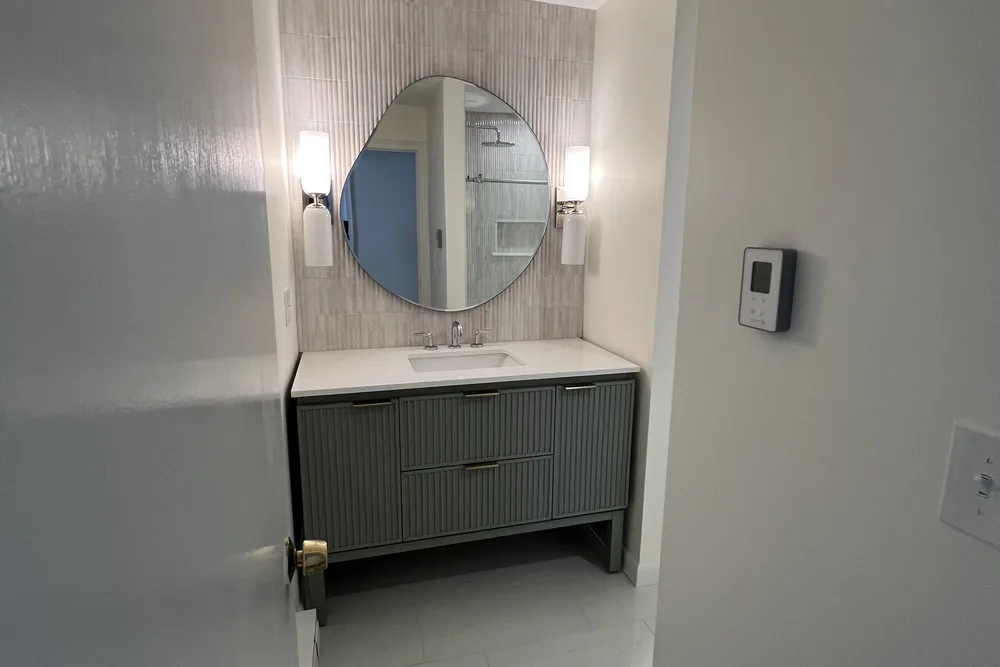
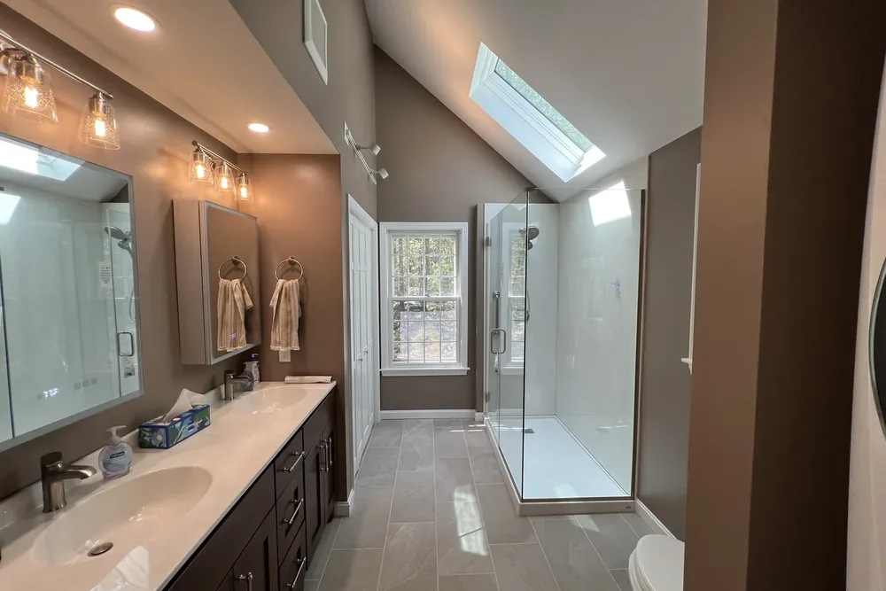
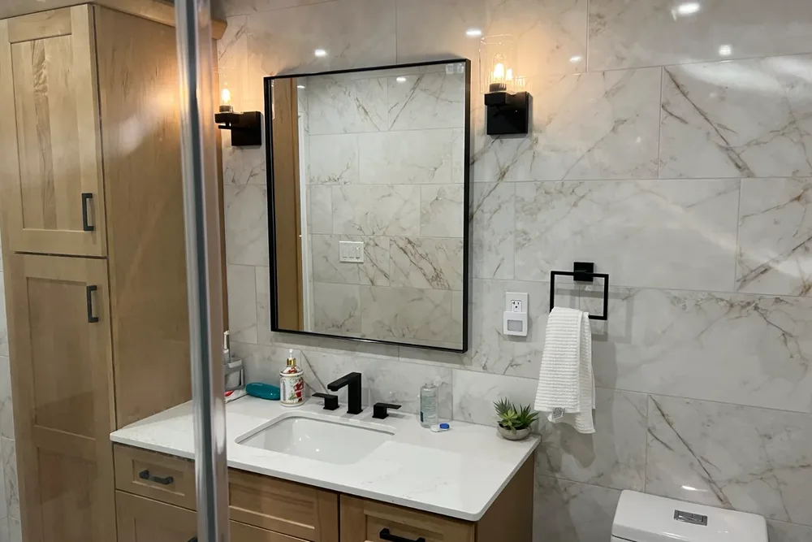
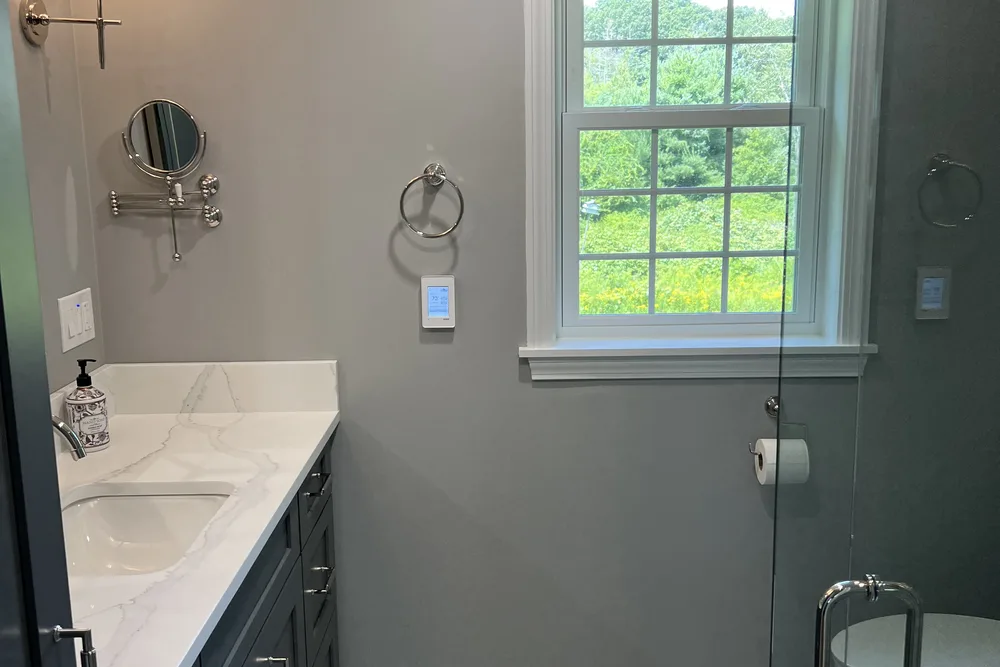
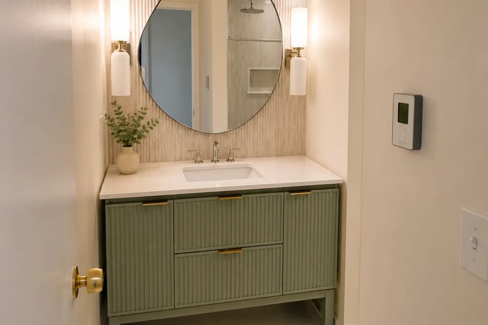

Manchester-by-the-Sea bathroom remodeling contractors
Bathroom remodeling Manchester-by-the-Sea, MA: tile, fixtures and a finish that lasts
Manchester-by-the-Sea bathroom remodeling from DeFaria Construction covers the rough-in, waterproofing, tile and fixtures, planned before demolition so the finished bathroom holds up to daily use and Massachusetts winters.
Local project planning
Manchester-by-the-Sea bathroom remodeling is about what happens behind the tile.

Across Manchester village (Central Street), Smith's Point, Coolidge Point and West Manchester, Manchester-by-the-Sea mixes 19th-century Colonial and Victorian homes near the harbor with shingle-style coastal estates and mid-century single-family houses inland. A lasting Manchester-by-the-Sea bathroom remodel depends on clean rough-in, proper waterproofing and ventilation before anyone sees a single tile.
This page is built for Manchester-by-the-Sea homeowners comparing bathroom remodeling contractors near them. It connects the Manchester-by-the-Sea search to project photos, neighborhoods, the full bathroom scope and a direct estimate path.
- Clear estimate conversations before the project starts.
- Direct communication with the homeowner from walkthrough to final walkthrough.
- Local coverage across Manchester-by-the-Sea and the wider Essex County area.
The scope
What a full Manchester-by-the-Sea bathroom remodel covers

In Manchester-by-the-Sea, older coastal homes near the harbor and the salt air often add moisture, ventilation and access constraints.
- Clean rough-in for plumbing and any layout change, checked for waterproofing before tile.
- Tile, vanity, fixtures and lighting selected and coordinated for a durable, water-tolerant finish.
- Ventilation, moisture control and finish carpentry handled so the room holds up over time.
Manchester-by-the-Sea permits and inspections run through the Town of Manchester-by-the-Sea Building Department, and DeFaria keeps that step organized so scope and timeline stay realistic.
Cost
How much does a bathroom remodel cost in Manchester-by-the-Sea?

Most Manchester-by-the-Sea bathroom remodels land between $12,000 and $25,000 for a standard full renovation, while larger or high-end bathrooms reach $25,000 to $45,000 or more. Scope, not a flat rate, sets the price.
- Size of the bathroom and whether the layout or plumbing moves.
- Tile, vanity, fixture and lighting grade you choose.
- Age and condition of the home, including hidden rot or old plumbing.
- How much waterproofing, ventilation and finish carpentry the room needs.
In Manchester-by-the-Sea, older coastal homes near the harbor and the salt air often add moisture, ventilation and access constraints, and that can show up in the plumbing, prep and rot-repair line of the estimate.
DeFaria gives a fixed, itemized Manchester-by-the-Sea estimate at the walkthrough, so the price matches the actual scope instead of a guess.
Process
How a Manchester-by-the-Sea bathroom remodel runs, step by step

Most Manchester-by-the-Sea bathroom remodels follow the same clear path, so you always know what happens next.
- Walkthrough and a clear, itemized estimate.
- Design and material selection: tile, vanity, fixtures and lighting.
- Protection of the home and demolition of the existing bathroom.
- Plumbing and electrical rough-in for the new layout.
- Waterproofing and moisture control behind the tile.
- Tile, vanity, fixtures and finish carpentry.
- Paint, final details and a walkthrough before you sign off.
DeFaria coordinates the Manchester-by-the-Sea permit with the Town of Manchester-by-the-Sea Building Department before the rough-in, and keeps you updated at each step.
A typical Manchester-by-the-Sea bathroom remodel runs about 2 to 4 weeks after materials arrive, depending on scope.
Materials
Materials and finishes that hold up in Manchester-by-the-Sea bathrooms

In Essex County, bathrooms face humidity, hard water and cold winters, so durability drives the finish, not just looks.
- Waterproofing membranes and correct sloping so water goes where it should.
- Durable porcelain tile, quality grout and sealed transitions.
- An exhaust fan that actually moves the air, not just spins.
- Vanities, hardware and paint rated for a wet, humid room.
From Manchester village (Central Street) to Coolidge Point, older coastal homes near the harbor and the salt air often add moisture, ventilation and access constraints, which is exactly why the finish is specified for the home rather than a catalog.
When to remodel
Signs it is time to remodel your Manchester-by-the-Sea bathroom

A few clear signs a Manchester-by-the-Sea bathroom is ready for a remodel:
- Water stains, soft flooring or a tub that never drains right.
- Mildew, musty smells or poor airflow.
- Tired tile, dated vanities and fixtures that keep failing.
- A layout that wastes the square footage you already have.
- Getting the home ready to list.
They are common across Manchester-by-the-Sea, from Manchester village (Central Street) to Coolidge Point.
Layout and rough-in
Planning the layout and rough-in for your Manchester-by-the-Sea bathroom
Every solid remodel in Manchester-by-the-Sea starts below the finish surfaces, at the layout and rough-in stage. We map where the toilet, vanity, tub and shower will sit, then decide what plumbing has to move to make that layout work without fighting the existing structure.
Moving fixtures means opening walls and floors, rerouting supply and drain lines, and confirming vent stacks are correct. Because older coastal homes near the harbor and the salt air often add moisture, ventilation and access constraints, we check joist spans and subfloor condition early so nothing surprises us once demolition is done in your Essex County home.
From Manchester village (Central Street) to Smith's Point and Coolidge Point, every Manchester-by-the-Sea bathroom remodeling is matched to the local housing stock in Essex County, with Town of Manchester-by-the-Sea Building Department handling the permit side.
Local context shapes the work: Manchester-by-the-Sea mixes 19th-century Colonial and Victorian homes near the harbor with shingle-style coastal estates and mid-century single-family houses inland. We plan the Manchester-by-the-Sea bathroom remodeling around exactly that.
We take on bathroom remodeling work across Manchester-by-the-Sea: Manchester village (Central Street), Smith's Point, Coolidge Point and West Manchester.
- Measure the existing room and note load-bearing walls
- Decide whether to keep or shift the layout
- Open floor to correct drain slope and framing
- Check subfloor for rot before rebuilding
Waterproofing and ventilation
Waterproofing and ventilation built for Manchester-by-the-Sea winters
Skipping waterproofing is the most expensive mistake a Manchester-by-the-Sea homeowner can make, and it only shows up after the tile looks finished. We use bonded membranes, backer board and properly sloped pans so water drains instead of soaking into the structure.
Because winters here keep bathrooms closed and steamy, we size and duct the exhaust fan to actually clear the humidity, venting it straight outside your Essex County home rather than dumping it into an attic where it causes hidden damage.
Whether the home sits near Manchester village (Central Street), Smith's Point or Coolidge Point, the Manchester-by-the-Sea bathroom remodeling is built for local conditions across Essex County and run through Town of Manchester-by-the-Sea Building Department.
We match the bathroom remodeling to the local homes. Manchester-by-the-Sea mixes 19th-century Colonial and Victorian homes near the harbor with shingle-style coastal estates and mid-century single-family houses inland.
- Waterproof pans sized for your Manchester-by-the-Sea shower
- Backer board rated for wet areas
- Humidity-sensing or timed fan for Essex County winters
- Protection against mold, rot and peeling paint
Tile, vanity, fixtures
Choosing tile, vanity and fixtures in Manchester-by-the-Sea
The finishes are the fun part, and also where Manchester-by-the-Sea homeowners can overspend or underbuy. We break down cost versus durability on flooring, wall tile, vanities, tops and faucets so you make each call with real numbers.
Expect roughly $12,000 to $25,000 for a standard full remodel and $25,000 to $45,000 or more for a large or high-end bathroom. We steer your Essex County budget toward materials that stay beautiful and functional for the long haul.
In Manchester-by-the-Sea, homeowners near Manchester village (Central Street), Smith's Point and Coolidge Point get a bathroom remodeling scoped for the neighborhood and the Essex County housing it sits in, permitted through Town of Manchester-by-the-Sea Building Department.
Every Manchester-by-the-Sea bathroom remodeling starts from the local reality. Manchester-by-the-Sea mixes 19th-century Colonial and Victorian homes near the harbor with shingle-style coastal estates and mid-century single-family houses inland.
- Vanity options matched to your Manchester-by-the-Sea space
- Fixtures chosen for finish and long-term reliability
- High-end bathrooms run $25,000 to $45,000 or more
- Spend where Essex County families touch it daily
Showers and accessibility
Walk-in showers, tubs and aging-in-place in Manchester-by-the-Sea

Whether you want a spa-like walk-in shower or a family tub, we build it around how you actually live in Manchester-by-the-Sea. Curbless entries, built-in benches and handheld sprayers make a bathroom easier to use today and for decades to come.
Aging-in-place features fit right into a good remodel: blocking in the walls for future grab bars, wider clearances, and slip-resistant floors. These choices protect Essex County homeowners who plan to stay in their home for the long run.
In Manchester-by-the-Sea, homeowners near Manchester village (Central Street), Smith's Point and Coolidge Point get a bathroom remodeling scoped for the neighborhood and the Essex County housing it sits in, permitted through Town of Manchester-by-the-Sea Building Department.
The Manchester-by-the-Sea bathroom remodeling is built for the neighborhood it sits in. Manchester-by-the-Sea mixes 19th-century Colonial and Victorian homes near the harbor with shingle-style coastal estates and mid-century single-family houses inland.
- Curbless walk-in showers with built-in benches
- Handheld sprayers and easy-reach controls
- Grab-bar blocking added inside the walls
- Slip-resistant floors for Essex County safety
Working with us
Working with a local Manchester-by-the-Sea bathroom contractor

When you hire DeFaria Construction, you work directly with the owner, not a rotating crew of subs you never meet. We start with a walkthrough in Manchester-by-the-Sea, listen to what you want, and give you a fixed, itemized estimate so there are no surprises.
We are licensed and insured, carry an A+ BBB rating, and pull the right permits for the work. Manchester-by-the-Sea permits and inspections run through the Town of Manchester-by-the-Sea Building Department, and DeFaria keeps that step organized so scope and timeline stay realistic. Once materials are on site, a typical Essex County bathroom takes about 2 to 4 weeks to finish.
For Manchester-by-the-Sea homes from Manchester village (Central Street) to Coolidge Point, we tie the bathroom remodeling to the realities of Essex County housing and keep Town of Manchester-by-the-Sea Building Department in the loop on approvals.
Local context shapes the work: Manchester-by-the-Sea mixes 19th-century Colonial and Victorian homes near the harbor with shingle-style coastal estates and mid-century single-family houses inland. We plan the Manchester-by-the-Sea bathroom remodeling around exactly that.
- Owner-led from walkthrough to final inspection
- Fixed, itemized estimate with no surprises
- Licensed, insured and A+ rated with the BBB
- About 2 to 4 weeks once materials arrive
Coastal homes
Bathroom remodeling in coastal Manchester-by-the-Sea homes: salt air, moisture and venting
Many Manchester-by-the-Sea bathrooms sit in houses that face the harbor, Singing Beach or the marshes along the shore. Salt air and damp sea breezes are hard on exhaust fans, metal fixtures and the paint on bathroom ceilings, so we plan the bathroom remodeling around moisture from day one instead of treating it as a finish detail.
In practice that means a correctly sized exhaust fan that vents to the outside, not into the attic, a timer or humidity switch so it actually runs long enough after a shower, and a continuous waterproofing membrane behind every tiled wet wall. On older coastal houses we also check the exterior wall cavity behind the shower, because wind-driven rain and years of steam can leave soft sheathing that should be fixed before new tile goes up.
Fixture finishes matter more near the water. We help you choose faucets, shower trim and hardware with finishes that resist pitting, and we keep metal accessories out of the direct splash zone where they would corrode first.
Older houses
What changes the price of a bathroom remodel in an older Manchester-by-the-Sea house
The 19th-century Colonial and Victorian homes near Manchester village and the shingle-style houses on Smith's Point and Coolidge Point were not built with modern bathrooms in mind. The cost of a bathroom remodel in these houses depends less on the tile you choose and more on what we find once the old finishes come off.
- Floor framing that sags or was notched for old drain lines and needs to be sistered before tile
- Cast iron or galvanized plumbing that is worth replacing while the walls are open
- Old wiring with no GFCI protection near water, which has to be brought up to code
- Plaster walls that are out of plumb and need to be furred or rebuilt for large tile
- Tight stairways and narrow halls that slow down demolition and delivery of a tub or vanity
We look for these conditions during the walkthrough and write them into the estimate as clear line items, so you know which ones are confirmed and which ones are allowances. If something new appears after demolition, you see photos and a written change before any extra work starts.
Mid-century houses inland in West Manchester usually have simpler framing and plumbing, so a full bathroom remodel there tends to land closer to the lower end of the cost ranges shown above.
Scheduling
Planning a Manchester-by-the-Sea bathroom remodel around the seasons
Summer in Manchester-by-the-Sea brings visitors, beach traffic and tight parking near the center of town, which affects dumpster placement and material deliveries. Many homeowners plan interior work like a bathroom remodel for the fall and winter, when the town is quieter and crews and inspections are easier to schedule.
A bathroom remodel is a good winter project because it is fully interior. We protect floors and stairs, keep the rest of the house usable, and sequence the work so you are without a working bathroom for as few days as possible. If the house has only one full bathroom, tell us at the walkthrough and we will plan the order of the work around that.
The best time to start the conversation is six to eight weeks before you want work to begin. That leaves time to choose tile and fixtures, confirm lead times and file the permit with the Town of Manchester-by-the-Sea Building Department.
Small bathrooms
Getting more out of a small bathroom in an older Manchester-by-the-Sea house
Many bathrooms in the older homes around Manchester village were added long after the house was built, tucked under a roof slope or carved out of a bedroom closet. They tend to be small, with a tub that takes up the whole back wall and a door that hits the vanity.
In a tight room the biggest gains usually come from the layout, not the finishes. Replacing a tub with a curbless or low-curb shower opens the floor, a pocket door frees the swing space, a wall-hung vanity and a recessed medicine cabinet or shower niche add storage without taking floor area, and a single large mirror and good lighting make the room feel bigger. Where the roof slope limits head height, we place the shower or the toilet where the ceiling is tallest.
Before moving any fixture, we check the floor framing and the drain route, because older joists are often notched or undersized under bathrooms. Fixing that before tile goes down is what keeps a new floor from cracking.
- Tub-to-shower conversions that open the floor
- Pocket doors, wall-hung vanities and recessed storage
- Fixtures placed where the ceiling is tallest
- Floor framing checked before tile
Project photos
Bathroom Remodeling photos for Manchester-by-the-Sea homeowners
The Manchester-by-the-Sea bathroom remodeling page shows real project photos, so you can see the finish level before requesting an estimate.
Areas covered
Bathroom Remodeling across Manchester-by-the-Sea neighborhoods
DeFaria Construction supports bathroom remodeling searches across Manchester-by-the-Sea and nearby Essex County towns, giving visitors enough local context to decide whether DeFaria is the right fit before they call.
Whether the home is near Manchester village (Central Street), Smith's Point or West Manchester, the Manchester-by-the-Sea bathroom remodeling is planned for the local housing stock and permitted through the Town of Manchester-by-the-Sea Building Department.
- Manchester village (Central Street)
- Smith's Point
- Coolidge Point
- West Manchester
Reviews
What Manchester-by-the-Sea homeowners say about DeFaria Construction
DeFaria Construction has a 5.0 rating from 19 reviews on Google. See all reviews on Google.
Beautiful full bathroom installment!! I love it!!
Luiz and subcontractors do great work. DeFaria Carpentry completed 2 bathroom renovations and we will be starting on a kitchen renovation in the fall. I highly recommend DeFaria Carpentry.
Luiz’s work is fabulous. Luiz renovated two bathrooms and our kitchen. Each step in the process moved along quickly and we finished earlier than expected. The crew was always pleasant to be around. We are very pleased with the quality of everything that Luiz did, and the price was reasonable. We…
Experience
Who does the work on your Manchester-by-the-Sea bathroom
DeFaria Construction serves homeowners and businesses throughout Middlesex County and Essex County as a local, owner-run builder. With hands-on involvement from Luiz DeFaria and A+ BBB credibility, the Manchester-by-the-Sea bathroom page is written around real scope, waterproofing and finish coordination, not a city name dropped into a template.
DeFaria Construction is a licensed and insured local contractor with an A+ BBB rating and verified customer reviews, and every Manchester-by-the-Sea project is owner-led by Luiz DeFaria from the first walkthrough to the final one.
"Excellent work! I’m extremely happy with the results of my bathroom. Defaria Construction did an amazing job and was very professional, careful, and detail-oriented throughout the entire project. The workmanship and finishing touches were outstanding. You can really tell when a company takes pride…"
Allanderson Amorim · Google review

Reviews from homeowners across Manchester-by-the-Sea and Essex County: Read DeFaria Construction reviews on Google. BBB Accredited Business with an A+ rating since March 2024, verify on BBB.
The goal is to help someone searching for Manchester-by-the-Sea bathroom remodeling contractors understand the scope, the neighborhoods covered and how to start a direct conversation before requesting a free estimate.
Call (781) 586-8838 for a free estimateFAQ
Common questions about bathroom remodeling in Manchester-by-the-Sea
What bathroom remodeling work does DeFaria Construction handle in Manchester-by-the-Sea?
In Manchester-by-the-Sea DeFaria Construction handles plumbing rough-in, waterproofing, tile, vanities, fixtures, ventilation and finish carpentry for a full or partial bathroom remodel.
How much does a bathroom remodel cost in Manchester-by-the-Sea?
A Manchester-by-the-Sea bathroom remodel usually runs from about $12,000 to $25,000 for a standard full remodel, and $25,000 to $45,000 or more for a large or high-end bathroom. DeFaria gives a fixed, itemized estimate at the walkthrough so the price matches the real scope.
How long does a Manchester-by-the-Sea bathroom remodel take?
Most Manchester-by-the-Sea bathroom remodels take about 2 to 4 weeks once materials are on site, depending on the scope and whether the layout changes.
Can a small Manchester-by-the-Sea bathroom be remodeled without moving walls?
Often yes. Many Manchester-by-the-Sea bathrooms gain the most from better fixtures, tile, storage and lighting inside the existing footprint before anyone considers moving plumbing or walls.
Is DeFaria Construction licensed and insured?
Yes. DeFaria Construction is a licensed and insured contractor with an A+ BBB rating and verified reviews, and every Manchester-by-the-Sea project is owner-led by Luiz DeFaria.
Does DeFaria handle Manchester-by-the-Sea bathroom permits and inspections?
Yes. Manchester-by-the-Sea permits and inspections run through the Town of Manchester-by-the-Sea Building Department, and DeFaria keeps that step organized so scope and timeline stay realistic.